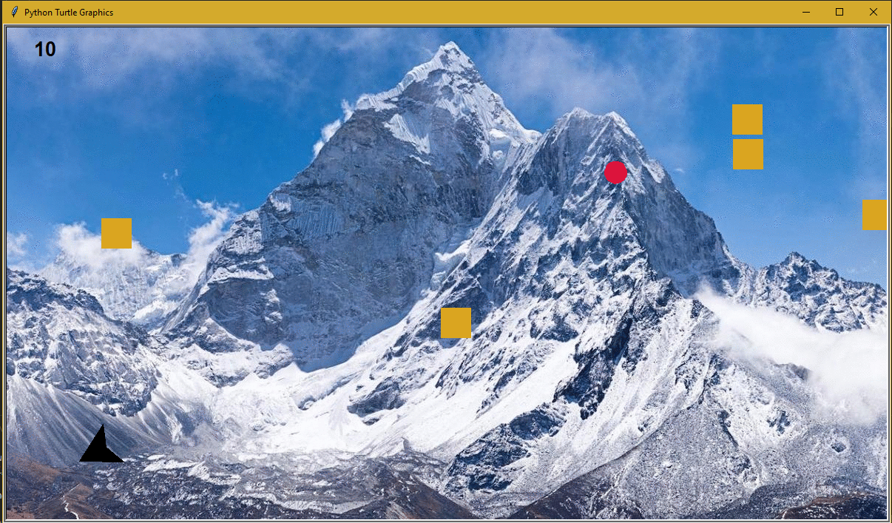

Home
Portfolio
About Me

Lightbot

Pizza Program 2.0
Our project is a simulation of a customer’s experience at Pepe’s Pizzeria. The user can select size, crust thickness, sauce, topping options, and cooking time of their pizza through the console. We utilized Python’s background image options to make our program more realistic to the user as well as images to replicate the pizzeria experience.
Rocket Blast
Our project is a game with a rocket in space that dodges and shoots at meteors that fall down from the top. For every meteor that is hit, five points are added to the score. If a meteor reaches the bottom, then one point is deducted from the score. After 30 seconds, the time is up and you are presented with your final score.
Cannonball Game

For this project, we decided to make a game called cannonball. There is a user controlled cannon and a cannonball which is shot from it. The user must line up the angle of the cannon with the targets, which move across the screen from right to left. Every time the cannonball hits a target, the score increases. Consequently, if one target makes it past the left edge of the screen, the game ends. We also made different game modes which make it easier or harder to play depending on the player's choice.
Raining Cats and Dogs Scratch Game
In this Scratch project we decided to create a player that dodges cats and dogs falling from the sky. A point is earned for each animal you dodge, and a life is taken away if you get hit! It is controlled with the left and right keys in order to evade the animals, while also collecting the mushrooms. These mushrooms give you an extra life for collecting them. Once you run out of lives, the game ends.